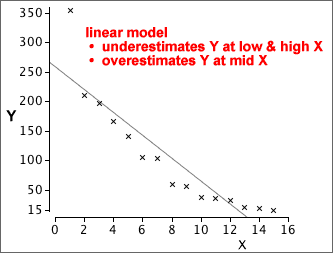

Linear model with transformed variables
If the relationship between Y and X is nonlinear, a linear model will give poor predictions and must be avoided.

However, by transforming one or both of the variables, it is often possible to linearise the relationship and therefore use least squares to fit a linear model to the transformed variables.
A logarithmic transformation of either Y or X often works, but a more general power transformation is sometimes needed to linearise the relationship.